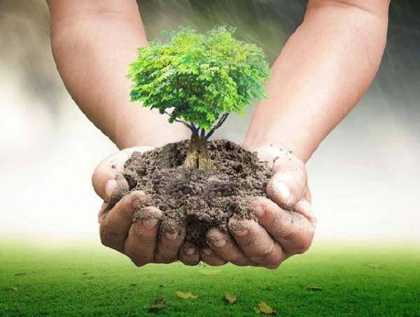
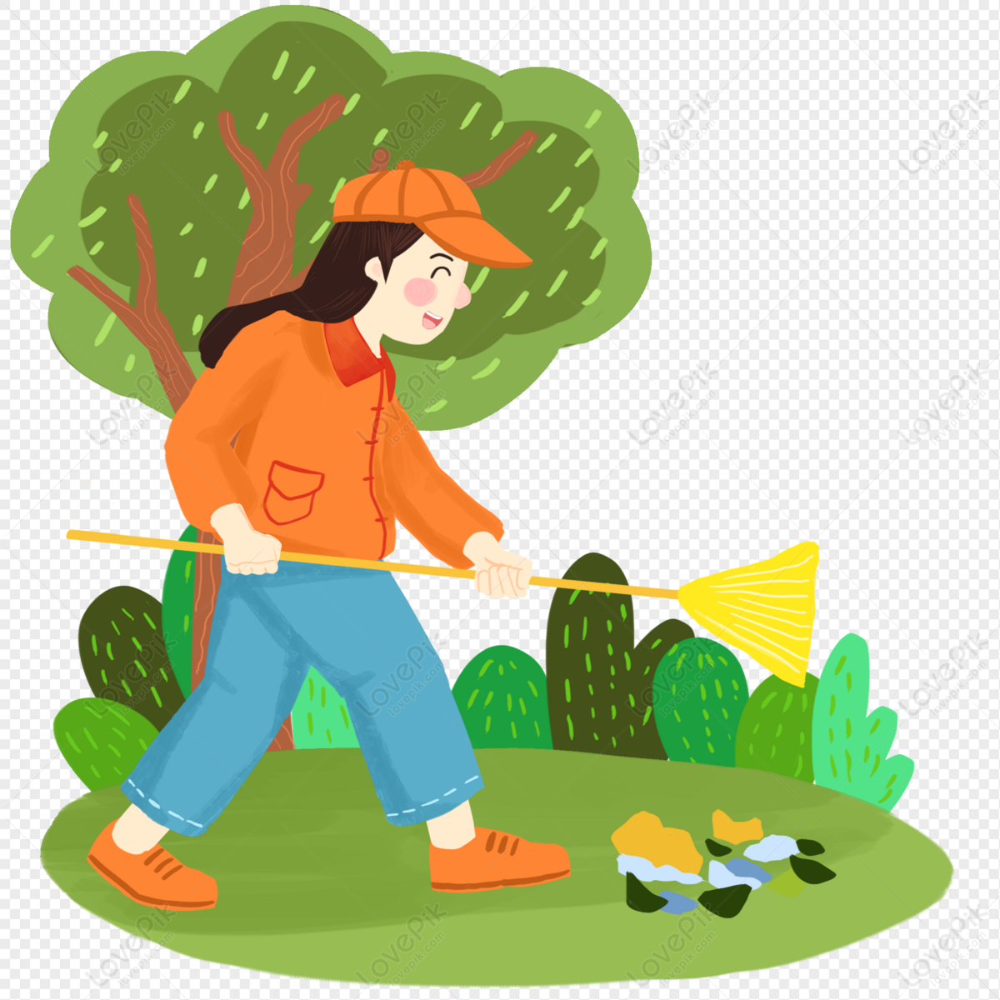
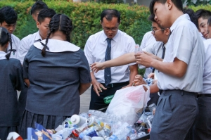

Tujuan Kami:
Di tengah tantangan besar yang dihadapi bumi kita, Gerakan Peduli Lingkungan hadir sebagai upaya bersama untuk menciptakan perubahan nyata. Kami percaya bahwa setiap langkah kecil dapat memberikan dampak besar bagi keberlangsungan planet kita.
kami mengajak individu, komunitas, dan organisasi untuk bergandengan tangan dalam menjaga kelestarian lingkungan.
Cinta Kasih Tzu Chi : Gerakan Peduli Lingkungan
Gerakan Peduli Lingkungan (GPL) Tzu Chi diawali di Sekolah Cinta Kasih Tzu Chi yang yang didirikan oleh Master Cheng yen yang didirikan untuk meminimalisir sampah yang ada di indonesia. GPL bertujuan untuk membentuk kesadaran peduli terhadap untuk menunjukkan rasa hormat terhadap kehidupan. Sekolah Cinta Kasih Tzu Chi bersiap menjadi media untuk mengajarkan nilai ramah lingkungan yang sering diajarkan (GPL)
Tujuan Dibuatnya : Gerakan Peduli Lingkungan
Plastik telah menjadi bagian tak terpisahkan dari kehidupan sehari-hari masyarakat Indonesia. Namun, dampak negatifnya terhadap lingkungan menjadi perhatian yang semakin mendesak. Indonesia, sebagai salah satu penyumbang sampah plastik terbesar di dunia, menghadapi berbagai tantangan dalam mengelola limbah plastik yang terus meningkat setiap tahun.
GPL akan berfungsi sebagai tempat murid Sekolah Cinta Kasih Tzu Chi untuk mengurangi jumlah sampah yang mereka gunakan, dan mendaur ulang barang bekas seperti (Botol bekas, kardus, dan kaleng bekas) yang bertujuan untuk mengurangi jumlah sampah di Indonesia
Cara Kita Bisa Kontribusi
 
( Menanam Pohon | Membersihkan Lingkungan | Menggunakan Kendaraan Ramah Lingkungan | Daur Ulang Sampah )
Bukti nyata peserta didik Cinta Kasih Tzu Chi


Peserta didik siswa-siswa Cinta Kasih Tzu Chi telah menunjukan bukti nyata Gerakan Peduli Lingkungan dengan mengumpulkan sisa sampah plastik dan memilahnya.
Kegiatan memilah sampah ini akan mengajarkan peserta didik pentingnya menjaga kebersihan lingkungan. Kegiatan yang dilakukan tiap Selasa dan Jumat ini diharapkan merupakan langkah pertama dalam menuju bumi kita yang bersih.
Kata Perenungan Master Cheng Yen
Melindungi bumi dimulai dari perubahan kecil dalam kehidupan sehari-hari. Dengan mengurangi, menggunakan kembali, dan mendaur ulang, kita menunjukkan rasa hormat terhadap alam dan semua makhluk hidup
~ Master Cheng Yen